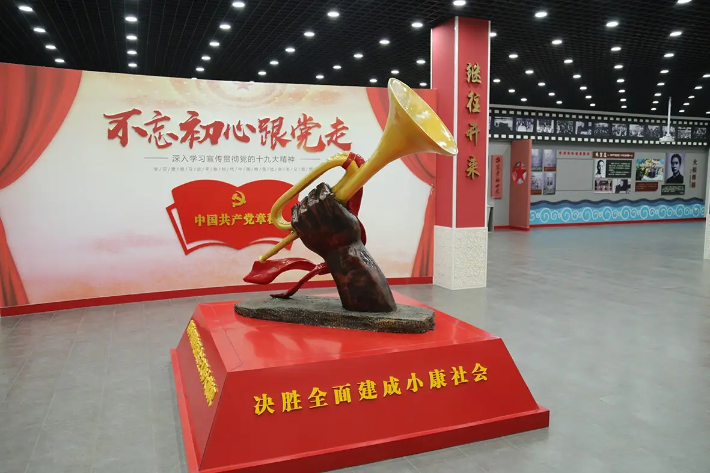

45年了，万山红遍的中国，您一定看见了吧！
在毛主席纪念堂二楼的毛泽东革命业绩纪念室里，有两副特殊的老花镜，一副去掉了左腿，一副去掉了右腿，这是为毛泽东读书而特制的。因为身体原因，晚年的毛泽东经常要躺在床上读书、看文件。他喜欢侧卧，戴普通眼镜非常不方便，靠床侧的镜腿总是会硌着脸。为了让他看书时舒适一点，工作人员特意为他订制了这两副老花镜，左侧卧时戴没有左腿的，右侧卧时戴没有右腿的。这两副老花镜也是毛泽东坚持读书、手不释卷的见证。
毛泽东朱德如何在井冈山组建“红四军”
1928年4月，毛泽东率领的工农革命军和朱德率领的湘南起义军在江西宁冈县会师，两军合编为工农革命军第四军。同年6月，按照中共中央的指示，各地的工农革命军一律改称为中国工农红军，工农革命军第四军改称为工农红军第四军，简称红四军。
毛泽东诗词集（一）
《七律·长征》
红军不怕远征难，万水千山只等闲。五岭逶迤腾细浪，乌蒙磅礴走泥丸。 金沙水拍云崖暖，大渡桥横铁索寒。更喜岷山千里雪，三军过后尽开颜。